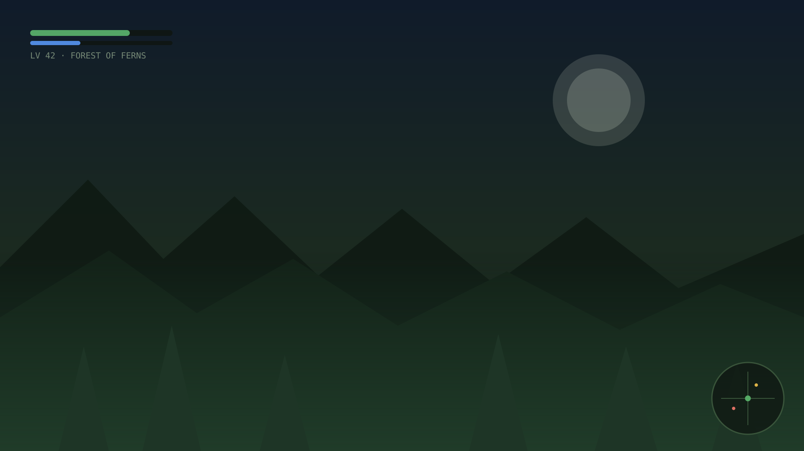

RAWR-ING NOW
1:223:41
♥♥♥
NOW PLAYING
1:314:05
♥♥♥
NOW PLAYING ★
1:062:58
♥♥♥
NOW ORBITING ✦
1:153:24
♥♥♥
NOW CRUISING ▲
1:113:12
♥♥♥
NOW FLOWING ≈
1:223:41
♥♥♥
PLAYER 1 · NOW PLAYING
1:022:47
♥♥♥
NOW PLAYING —
1:314:05
♥♥♥
NOW PURRING
1:113:12
♥♥♥
Your music, framed.
A live Spotify card that floats over your desktop. Dress it. Export it.
02 · DINO — RAWR-ING NOW
The house theme. Spikes included.
Classic Rex
The one that started it.
RAWR-ING NOW
1:223:41
♥♥♥
RAWR-ING NOW
1:223:41
♥♥♥
RAWR-ING NOW
1:223:41
♥♥♥
NOW PLAYING
2:324:05
♥♥♥
NOW PLAYING
2:324:05
♥♥♥
NOW PLAYING
2:324:05
♥♥♥
03 · MINIMAL — NOW PLAYING
For when the music does the talking.
Carbon
Nothing to prove.
04 · RETRO Y2K — NOW PLAYING ★
Chrome gloss. Zero restraint.
Frutiger Sky
Forecast: 2003, forever.
NOW PLAYING ★
1:202:58
♥♥♥
NOW PLAYING ★
1:202:58
♥♥♥
NOW PLAYING ★
1:202:58
♥♥♥
NOW ORBITING ✦
2:253:24
♥♥♥
NOW ORBITING ✦
2:253:24
♥♥♥
NOW ORBITING ✦
2:253:24
♥♥♥
05 · SPACE — NOW ORBITING ✦
For sessions past midnight.
Nebula
Now orbiting.

PLAYER 1 · NOW PLAYING
1:372:47
♥♥♥
NOW ORBITING ✦
2:253:24
♥♥♥
NOW PLAYING ★
1:202:58
♥♥♥
NOW PURRING
1:484:05
♥♥♥
06 · WIDGET — FLOATS OVER EVERYTHING
Always
on
top.
Drag
it.
Resize
it.
Yours.
Pin it over your game, or pipe it into OBS as a browser source.
07 · THEME BUILDER
Infinite themes · infinite colorways
9 ship in the box. The theme builder makes the rest — colors, backgrounds, type, shape, plus a Motion tab for how it idles and a Reactions tab for how it moves to your music (there's a built-in test beat, so you can tune it in silence).
COZY CABIN
VAPORWAVE SUNSET
NEWSPAPER
HONEY HIVE
LO-FI STUDY
+ YOURS
08 · COMMUNITY — MADE BY EVERYONE
Your theme, everyone's card.
Publish yours.
Build a theme, hit Publish, and after a quick review it's installable in every FrameSaur on earth — with your name on it. Browse what everyone else made, follow the creators whose taste you trust, and wear their look in one click. Stickers publish too.
Sign in with Discord · nothing leaves your PC except the theme you choose to share
09 · YOUR LISTENING — HONEST NUMBERS
Stats that don't flatter you.
Know your week.
A Home tab that counts what you actually heard: time comes from real playback, so a paused track earns zero and skipping ahead invents nothing. Top artists and tracks, a listening clock, streaks — and you can import your Spotify history for the years before FrameSaur, or export yours and carry it to another PC.
Lives in a local database on your PC. Never uploaded, never in backups, never on stream.
10 · STICKERS — PEEL & STICK
Slap them anywhere. No residue.
Sticker it.
16 drawn stickers in the tray. A sticker maker for the rest — pixel doodles up to 64×64, uploads, even animated WebP/APNG stickers that hold their pose in exports.
+
NOW ORBITING ✦
2:123:33
♥♥♥
11 · CONNECT SPOTIFY
Three steps. No setup wizard.
01
framesaur
♫ Connect Spotify
Open FrameSaur and click Connect.
02
Approve in the tab that opens.
Let FrameSaur see what you play?Agree
03
Play anything. The frame catches it.
RAWR-ING NOW
1:223:41
♥♥♥
12 · DOWNLOAD
Take it home.
Download for WindowsUnsigned .exe — Windows may show an unknown-publisher warning. That's us.
Runs on your own free Spotify developer app — paste its Client ID once and you’re set. Sharing with friends means adding them to that app; Spotify caps development apps at 25 listeners.
Try in browser ↗